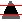
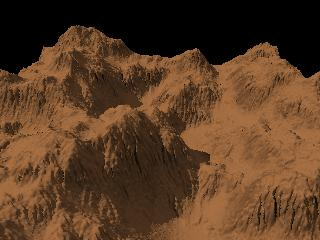
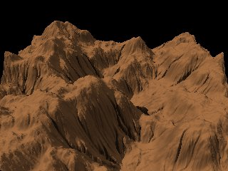
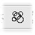

| ORIGINAL TERRAIN | |
|
 |
 |
 |
 |
 |
||
 |
 |
 |
 |
 |
||
 |
 |
 |
 |
 |
||
 |
 |
 |
 |
| Tool |
Use, hints |
Example |
| There are brightness / contrast
controls similar to those offered by most paint programs. Of interest:
Example 2 shows the "valleys" created when "Revert slope" is checked and brightness is decreased to -80. |
 |
|
| Threshold |
This tool "cuts" the tops of the
terrain to a maximum value, and its depressions to a minimum. Its most obvious use is to simulate mesas (see the Desert tutorial). A "%" slider allows to mix the result with the source. For instance, the example shown uses 60% of the result and 40% of the source. This puts some noise on the cut areas, for more realism. Here, the height was bounded by a minimum of 15000 and a maximum of 40000. |
 |
| Reverts the pixel height (0 is
replaced by 65535, 1 by 65534, and so on). Click the button again to revert to the original. |
 |
|
| This tool applies power or
logarithmic transformations. A power transformation increases the steepness of the slopes, "sharpens" the summits and decreases the noise at lower altitudes. On the contrary, a log transformation "widens" the summits and decreases the noises at higher altitudes. A power transformation with an exponent less than 1.0 also widens the summits. In the example, the power(height, 4) function was applied to the default terrain. It was rotated 180° in the camera preview. |
||
| This tool cuts the height field
in square or rectangular areas, separated by "streets", and averages
the height values in each area. With an appropriate texture, the result could look like a city with skyscrapers (one would say: if it's far enough from the camera...), or whatever else you can imagine. For a post-apocalyptic look, the result can be merged with the source to add noise on the top (try "x" as merge operator, and 100% as the "mix" value), eroded, and so on... I must credit the Bryce software for this idea. Unfortunately, Geomorph doesn't provide yet a realistic texture for simulating rows of windows in the towers, in version 0.23. It is left as an exercise to the user ;-). |
 |
|
Giant Causeway |
This tools works like the
"cityscape", except that height values are averaged in hexagonal areas. The intended use is to simulate the basalt pillars like those seen in the Giant Causeway, in Northen Ireland. The hexagons are separated by a border, whose width can be set by the user. A merge dialog is also provided, for mixing the source and the result. This adds noise on the top of the columns. The example was generated with these parameters, other being left to their default values: Radius: 32; Border: 1; Smooth - radius: 2; Mix source and result: 50. |
 |
| Terraces |
The terraces tool quantizes
height values in a number of levels specified by the user. The level heights can be randomized to give a more natural look. A post-processing dialog is provided to smooth the edges of the levels and to remove "needles" (artifacts) that are created when the area of the top level of a hill is too small. Notice that this dialog features a distinct "apply" button, because this post-processing is too intensive to be applied immediately, when the controls are moved (said differently: don't forget to click that button if you move the post-processing sliders!). As in many other tools, the result can be merged with the source. This is a way for decreasing the flatness of the levels, which could look unnatural in some instances. Merging source and result with a subtract operation can also be used to create a cavity to be filled with water, like in this scene. The example shown was computed with the following parameters, the others being left to their default values: Levels: 7
Seed: 550023695 (for
randomization)
Smooth radius: 2 Radius of artifact removal: 10 Merge - mix: 0 (half the source + half the result) |
 |
| This tool provides a standard
smoothing function, for removing the highest frequencies of the
terrain. The tool can also be used to remove the lower frequencies and
keeping the highest. It is useful in a lot of situations, for instance to remove small defects after a process or to prepare a terrain for some processes. An example of removing the defects is given by a terrain of the "subdivision 2" type, generated without the higher frequencies. This kind of terrain frequently requires some smoothing to remove the generative "mesh", a soda cracker - like structure. The topmost example is the result of smoothing the default terrain with a radius of 20 pixels. The image at the bottom shows what was removed during the smoothing process. These are the highest frequencies. To obtain them (which means: to remove the lower frequencies), choose the "minus" operation in the merge source / result dialog, and move slightly the "mix" slider to a value less than 100. |
 |
|
| This tool is similar to the
"sharpen" tool provided by paint programs. With a small radius, it can be used to increase the surface noise of a terrain, like in the example shown. Here, a radius of 1 was used and the terrain was processed twice with a 7.5 level. A side effect, in this particular case, is to emphasize the "scan line" effect of the subdivision algorithm. A large radius creates edges and increases the amplitude of the bumps whose frequencies correspond to the radius, blurring higher frequencies. It also widens dark lines or areas. |
 |
|
| Translation |
The terrains generated by
Geomorph
can be tiled. East and West, and North and South, connect smoothly or
"wrap". This means that a terrain can be "translated" seamlessly, for instance to center a hill. The example shows the result of a horizontal translation of 30% and a vertical translation of -50%. |
|
| A terrain can be rotated
seamlessly with an arbitrary angle. Notice that any rotation other than a multiple of 90° will break the tiling property. When the terrain can be tiled, the areas falling outside the boundary are completed by wrapping the indexes. For instance, in a 512x512 terrain, the 512 coordinate becomes 0, 513 becomes 1, and so on. When the terrain cannot be tiled, these areas are filled up by mirroring the terrain, so that, in our example, 512 becomes 511, 513 becomes 510, and so on. The terrain rotation should not be mixed up with the camera rotation in the preview. The terrain rotation is generally non-revertible, except when the angle is a multiple of 90°. On the contrary, the camera rotation relates only to the way the terrain is viewed and thus can be reset at any moment. The example shows a 45° rotation. |
 |
|
| Stretch and compress |
This tool is mainly based on the
tiling property discussed with the translation and the rotation tools. Because the North and South, or the West and East connect smoothly, a terrain can be "stretched" by placing 2 copies of it side by side, and scaling down one axis by 50%. Repeating the process on the other axis produces 4 tiles of the same terrain. Example 1 shows the default height field after a vertical (N-S) stretching. Example 2 shows the same terrain after a vertical (N-S) stretching, followed by a click on the accept button, then a horizontal (W-E) stretching. Notice how the terrain seems rough. The original terrain appears 4 times, scaled down by 50% on the X and Z axis, but the height (Y axis) is not scaled down. |
|
| Horizontal mirror |
The terrain is mirrored
horizontally when the
tool icon is clicked. Click on the tool icon once again to return back to the orginal terrain. |
 |
| Vertical mirror |
The terrain is mirrored
vertically when the
tool icon is clicked. Click on the tool icon once again to return back to the original terrain. |
 |
| This tool calls
the "subdivision 2" algorithm, retains only the highest
frequencies - those constituting the "noise", and adds them to the
active
height field. We computed the example shown from the terrain smoothed with a radius of 20 pixels. To get a result, you must set the % to a value greater than 0, and then click the "Apply" button. "Distribution" and "Roughness" sliders are provided. "Distribution" controls the density or the "sparseness" of the noise. The higher is the value, the sparser are the "lumps" or hills. It works like an exponent to the height. "Roughness" controls the amplitude (height) of the noise. |
||
| Merge |
The merge tool allows to merge
the
active terrain (the one you are editing) with a terrain selected among
the open terrains. A list of the available terrains and a preview of the selected terrain are displayed in the tool dialog. The selected terrain can be added, subtracted or multiplied with the current one. Terrains can also be compared with a minimum or maximum operation. Relative brightness of both current and selected terrains can be adjusted. The selected terrain can be translated for special effects. The purpose of the tool is very general. For instance, it can be used to add a particular kind of noise, the noise being provided by the selected terrain. Other less obvious uses include the transformation shown in the example. The default terrain was merged with itself, for a cresting effect. The "min" operation was selected, the "mix" value was set to 0, and the selected terrain was translated horizontally with a value of 20. Hint: to refresh the height fields list in the tool box after creating a new height field, click once more on the tool icon. Notice that a lot of Geomorph tools offer the merge function in a subdialog. In this case, the current terrain is implicitly the source, and the selected one is the result. |
 |
| Shape
filter |
The purpose of the "shape
filter" iis mainly to remove edges by adding or multiplying the
terrain with a function derivated from a gaussian bell. This creates an "island". The look is different, depending if the bell is added to the terrain (example 1) or multiplied with it (example 2). The multiply option gives a smoothly decreasing "shore", more suitable for some uses. Notice that in both examples, the camera was rotated with an angle of 180°. The same tool is offered during the creation process. |
  |
| This tool erodes the terrain by
removing soil, depending on the slope. The places where the slope is less than a threshold in degrees set by the user loose no soil and become crests. The user sets the number of steps the process is repeated. The example was produced with 8 steps. This tool is very useful to improve the natural look of the terrain. One recommended use is to refine the crests created by the "rain erosion" or the "whimsical erosion" tools. Try something like 3 steps. The tool can also be used to "widen" the hills. Try this: revert the terrain, crest it, then revert it back. Here are points of some interest to understand the process:
|
 |
|
| This tool creates an eroded
terrain by pouring rain drop by drop at random coordinates. When the
slope is higher than a given threshold, the drops move soil downhill.
When the slope is lower, the soil is deposited. The process cuts narrow
channels in the surface. The result can be refined with the "crests" tool, using 2 or 3 steps. The soil is moved downhill in one of 6 directions, at each point. Differently stated, the process simulates an hexagonal symmetry. Notice that the algorithm was improved between the 0.31 version and the 0.4 version. The older was not working right on flat surfaces with cracks. Moreover, the hexagonal symmetry simulation gave artifacts. The older algorithm is still available, though. Le nouvel algorithme propose deux paramètres principaux: la force, qui correspond à la quantité de sol déplacée à chaque itération, et la dureté, qui correspond en gros à la pente des parois des canaux, ou à l'inverse du degré de diffusion du sol déplacé. Une dureté peu élevé donne des canaux plus "flous". The new algorithm provides two main parameters: the strength, which relates to the amount of soil moved at each step, and the hardness, which is roughly the slope of the channel edges, or the opposite of the soil diffusion. A lower hardness gives "blurred" channels. The first example shown was produced with the pre-0.4 algorithm and a setting of 25000 drops. The second example was produced with the new algorithm and a setting of 100000 drops. Notice that the result is very sensitive to the terrain size. The channels are created at the pixel level, so they look smaller on a 1024x1024 terrain than on a 512x512 terrain. Furthermore, a 1024x1024 terrain requires 4 times more drops than a 512x512 one for getting the same erosion level, because its surface is 4 times larger. Unlike the crests tool, the rain erosion does not decrease the average height of the terrain. |
  |
|
| The "whimsical erosion" can be
used to generate quickly a "ribbed" look. The radius parameter controls the scale (frequency) of the "ribs". The tool does not pretend to simulate any natural process, in anyway. The result will generally show some unnatural "loops" in the valleys. However, the result can constitute the basis for further erosion with the other tools, which will remove these "loops". Example 1 shows the result obtained with the default parameters. Example 2 shows the same result, modified with this cycle of transformations:
Hint for adventurous users: a weird result can be obtained by setting the "mix" value of the "merge" subdialog to 100. Note related to version 0.4: the example shown were computed with the old version of the rain erosion algorithm. |
 |
|
| Craters |
This tool intends to reproduce
a "meteor rain". It works better on a terrain with a lower contrast. Play with the noise parameters to get a more convincing result. The example was produced by using the default terrain with the contrast lowered to -50 with the "Brightness and contrast" tool. 20 craters were asked for, and the radial noise was set to 8%. |
|
| Waves |
This tool applies wavy
distortions to the terrain, on any axis. The default dialog provides two tabs. The first tab is preset to give a vertical distortion (on the Y axis), the second one is preset to produce a horizontal distortion (on the X or Z axis, depending on the rotation). To see the result of the distortion, the "amplitude" scale must be moved to a value greater than 0. The distortions are applied ("stacked") in the order of the tabs. For instance, when the 2 default tabs are set to distort the terrain vertically, and one set of waves has a 90° rotation, an interference pattern will appear. The user can add tabs, for stacking more than 2 deformations. Lateral (X-Z) distortions will create non-continuous edges on non-tiling terrains. Techniques that can be used to minimize this effect include framing the terrain with the camera so that the edges are not shown, or using a "shape filter" to smooth progressively the edges (create an island). In the future, hopefully, Geomorph will offer a scale function to "cut" these edges. Example 1 shows a straight use of the tool. In the first tab (vertical deformation), the amplitude is set to 36, the period to 6 and the rotation angle to 135. In the second tab (lateral deformation), the amplitude is set to 35 and the period to 8. Example 2 shows how the tool can be used to raise mountains in the background. First, the "Brightness and constrast" tool was used to decrease the contrast to -30, while unchecking the "Keep luminosity" option. Second, in the "Waves" tool, only the first tab was used, to create a wave with only one peak in the image (period = 10). The phase was set to 50, for moving the crest of the wave to the north edge. The amplitude was set to 50. This technique was used to rise the background mountains in the Painted Desert example. |
  |
| This tool moves down soil
depending on the slope. Unlike the "crests" tool, no soil is lost. The average height stays roughly the same. This tool can be used to soften the surface while keeping some noise. With a high slope threshold parameter, it gives some smooth cresting. Example 1 shows the default height field after 50 steps, with a slope threshold of 60°. Notice the crests. Example 2 shows the result with 50 steps and a slope threshold of 30°. |
 |
|
| Oriented gravity erosion |
This tool
applies the gravity erosion in one of 4 directions (N - S - E - W). Example 1 shows the result after 50 steps, in the default W - E direction. In example 2, we accepted the first result, changed the direction to E - W and applied the process 50 times. In example 3, we used the merge subdialog to merge the original terrain with example 2. We had to adjust the brightness of one of the merged terrains (see the merge dialog) to make the "rocks" pop out from the "sand". The camera was rotated 345° (-15°) around the Y axis. |
 |
| Dunes |
This tool moves soil from left
to right, by throwing it ahead like if it were sand grains under the
wind. The formula used is derivated from the research of Bruno Andreotti and his colleagues about barchan dunes (crescent shaped dunes). It is not realistic as it could be (it's difficult to get barchan dunes with it!), but good enough for artistic use. The example shows what the default parameters produce. The parameters are:
|
|
| This tool creates ripples by
"creeping" sand grains. Please notice:
|
 |
|
| This tool can be used to raise
the edges of flat surfaces with steep boundaries. The "Terraces" and the "Giant Causeway" examples use this tool. |
||
| This tool can be used to create
various kind of crack networks, from the most imaginary to the (al)most
realistic. You can even write a word and integrate it as cracks in the network. This guide provides some examples and explanations. |
 |
 Back to the documentation index
Back to the documentation index{kind=link}